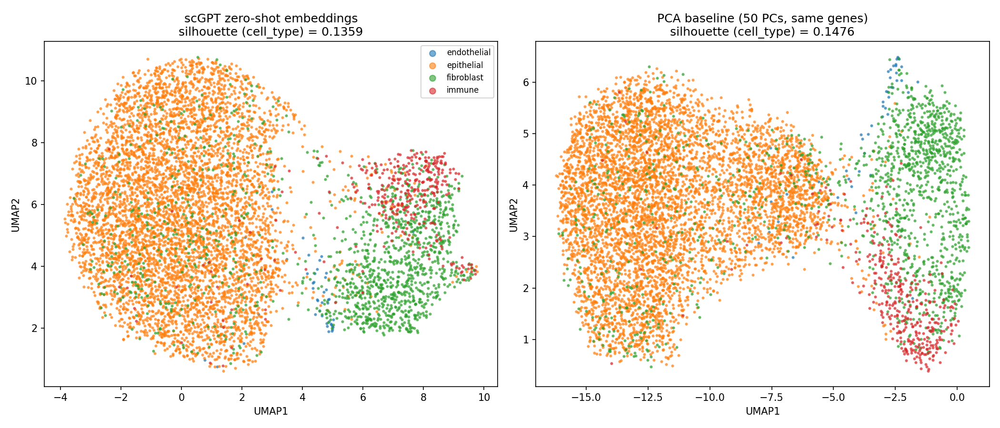

scGPT Zero-Shot Embedding Baseline:
A Documented Negative Result
Before trusting a foundation-model embedding as a communication score, it has to clear a basic quality bar: does it separate known
cell types at least as well as plain PCA on the same genes? Using the pretrained scGPT whole-human checkpoint in pure
zero-shot mode (no fine-tuning) on the 274 panel genes that overlap its vocabulary, the embedding narrowly passed that
gate (92.1% of the PCA baseline's silhouette score) — but the resulting embedding-similarity communication score
does not correlate with the spatial-edge null model's edge_z_score ranking that anchors the rest of this thesis.
This page reports both results plainly, without spin.
Step 1 gate: passed narrowly, not a demonstration of scGPT superiority
scGPT's zero-shot cell embeddings scored silhouette = 0.136 against the existing per-cell cell_type labels,
versus 0.148 for a 50-component PCA on the identical 274 overlapping genes and cells — a ratio of 0.921, just inside
the pre-registered ≥0.90 "within ~10% of PCA" threshold. scGPT did not outperform simple PCA; it stayed inside the allowed
margin. Both embeddings show the same qualitative structure (one large epithelial cluster, a second stromal/immune cluster),
consistent with the embedding mostly recovering coarse cell-type identity rather than adding new signal.
Step 2 finding: the embedding-based score does not reproduce the spatial-edge ground truth
Averaging scGPT embedding cosine similarity over the same 6-NN spatial graph edges used throughout this thesis produces a
sender→receiver score that is uncorrelated with edge_z_score (Spearman ρ = −0.002, p = 0.99 across all 22
rows; ρ = 0.109, p = 0.69 across the 16 unique cell-type pairs). The six CD274→PDCD1 pairs — which this thesis's edge model
correctly scores at exactly 0.000 because zero spatial edges connect any CD274+ cell to any PDCD1+ cell — show
high embedding similarity (0.887–0.925), indistinguishable from the CXCL12–CXCR4 pairs. The foundation model does not
"see" the physical non-contact that the strict edge-product score was built to detect. The thesis's top axis,
fibroblast→immune (CXCL12–CXCR4, edge_z_score = 29.5, the highest in the dataset), ranks only 13th of 22 by
embedding similarity, and fibroblast→epithelial ranks 9th of 22 — neither near the top. All 22 rows compress into a
narrow 0.88–0.93 similarity band, consistent with whole-cell zero-shot cosine similarity mostly reflecting shared cell-type
identity rather than the directional ligand-receptor spatial-contact signal the edge-based null model targets.
Zero-Shot Embedding Quality: scGPT vs. PCA Baseline

Side-by-Side UMAP, Colored by cell_type
Left: scGPT zero-shot cell embeddings (274 overlapping genes). Right: 50-PC PCA baseline on the same genes and cells. Both reduced to 2D via UMAP.
Embedding-Similarity Score vs. Spatial-Edge Ground Truth (all 22 rows)
Saved to results/embedding_baseline/embedding_communication_scores.csv. Ranked by embedding similarity, descending.
| Sender | Receiver | Ligand | Receptor | Embedding Similarity | edge_observed_score | edge_z_score | Edge-Null Verdict |
|---|
Environment & Reproducibility Notes
scGPT whole-human (bowang-lab), 12-layer / embsize 512 / 8-head transformer, 60,697-gene vocabulary, downloaded from the official release.
New
scgpt-zeroshot conda env (Python 3.10, torch==2.3.0+cpu, scgpt==0.2.4) — the existing thesis-spatial-ccc environment and its pinned dependencies were never modified.
No MSVC compiler on this machine, so
flash-attn could not be built. Loaded with use_fast_transformer=False (scGPT's documented fallback), which loads the identical pretrained weights.
Zero-shot only — scGPT was never fine-tuned on this dataset. CPU inference on all 7,163 cells completed in ~72s.